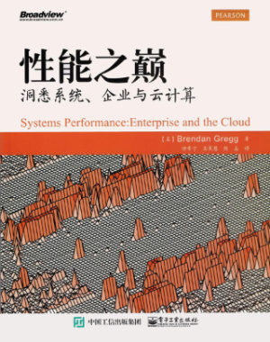
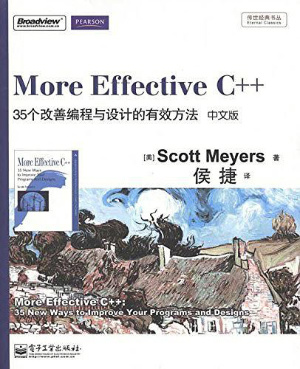
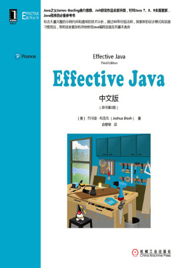
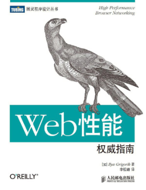
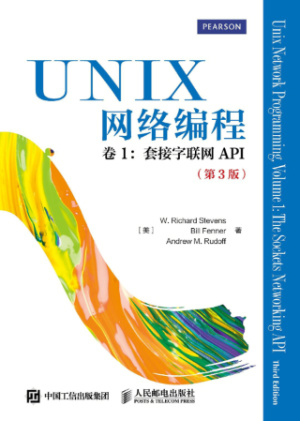

你好，我是张绍文。专栏已经发布了一段时间，很多同学在学习专栏时问我，想补充一些基础知识可以参考哪些图书。今天我就结合专栏的编排，给你推荐几本我看过并且对我帮助很大的图书。推荐的书单不在于数量，而在于希望尽可能覆盖 Android 开发工程师进阶学习的路径，只有掌握牢固的基础知识，才能在进阶的道路上走得平稳。专栏把进阶的各个主题由点到线串联起来，但这背后必然少不了一些基础的、底层的知识进行支撑，而这些经典的图书涵盖的知识点比较全面，即使遇到问题时放在手边也是很好的参考书。
作为一名 Android 开发工程师，你需要学习一些 Linux 的基础知识，在做优化时可以有更好的思路。
关于 Linux 学习，我推荐：

极客时间专栏：Linux 性能优化实战
如果想更好地学习虚拟机以及 Hook 相关的知识，你需要对 C++ 以及编译原理有一定的了解。
关于虚拟机，我推荐：
关于编程语言，我推荐：


其他的知识，例如网络、数据库的一些细分领域，我推荐：

UNIX 网络编程 卷 1：套接字联网 API（第 3 版）

COMMUNITY NOTES
读者评论
惭愧了，一本没有看过
还要请教读书的方法，毕竟买书如山倒，读书如抽丝。
看到书单我躲在墙角瑟瑟发抖
老哥，涉猎很广，从Linux层打到应用层，福气了
请问读书是每本书单独记笔记好还是整理归纳到自己的知识笔记里好呢
就看过一本，不过以前学习Android的时候，有看过一小部分罗升阳写的《Android系统源代码情景分析》
就看过两本
老师对iOS 优化的书籍也推荐几本呗
涉及的很广啊，这学起来难度比较大
谢谢老师的推荐